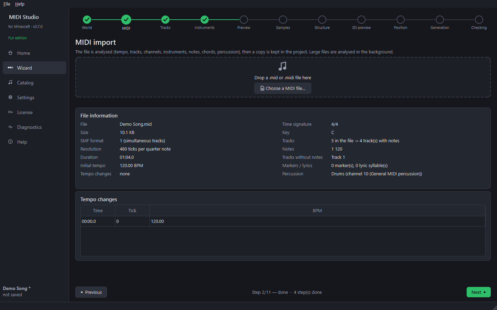

Step 4 — Import a MIDI file (wizard step 2)
Goal: load the song you want to hear in Minecraft.
- Click Next to reach step 2, MIDI.
- Drag a
.mid/.midifile onto the drop zone, or click Choose a MIDI file…. - The analysis runs in the background: tempo and tempo changes, duration, tracks, channels, instruments, notes, chords and percussion.

What you see
- File information — size, format, resolution, duration, initial tempo, time signature, key, number of tracks and notes.
- Tempo changes — the table on the right lists every change (they are respected in game).
- Warnings — for example tracks without a name, notes without an end, or a percussion track on a melodic channel.
A copy of the MIDI file is stored inside the project, so the project still works if you move or delete the original file.
Free edition: only the first 20 seconds of the song are played and converted. The full edition converts the whole song.
Next guide: choose the tracks.